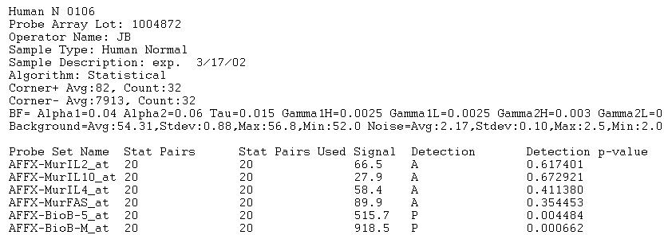

Affymetrix MAS5/CCOS Format
These are text files (specifically, text versions of .CHP files) produced by the MAS software from Affymetrix. The image below provides an example of an input file that the application will accept as a correctly formatted "Affymetrix MAS5/GCOS" file type (only the first 18 lines of the file are shown):

Any number of lines can precede the actual array data (in the example above the first 11 lines are non-data lines). All such lines will be ignored when the file is parsed. The beginning of the actual data is marked by a row containing tab-separated column names. Any number of columns may be present; however, only the following columns will be acted upon (column names must be spelled exactly as listed below and cannot contain tabs):
- Probe Set Name: This column is mandatory; the file will fail to be parsed unless this column is present. Its contents are strings that provide the marker names associated with a microarray set (AFFX-BioB-5_at, AFFX-MurIL10_at, etc).
- Signal Log Ratio: This column is optional. If present, its contents must be real numbers and will be used as the expression measurements for the corresponding markers.
- Signal: Same as column "Signal Log Ratio" above. If both columns are present, only "Signal Log Ratio" is used ("Signal" will be ignored)
- Avg Diff: Same as columns "Signal Log Ratio" and "Signal". If either "Signal Log Ratio" or "Signal" is present then "Avg Diff" is ignored and the contents of those columns are used instead (with "Signal Log Ratio" taking priority over "Signal"). At least one of these 3 columns ("Signal Log Ratio", "Signal", "Avg Diff") must be present for the file to parsed in a meaningful way. if this is not the case, the file will still be read in but all markers will be tagged as having missing values.
- Detection: This column is optional. Its value is a single character (P, M, or A) and if present it is used to determine the absolute call for a measurement (A -> absent, M -> marginal, P -> present).
- Abs Call: Exactly the same as column "Detection" (for compatibility with text files produced by older versions of the MAS software).
- Detection p-value: This column is optional. Its values are real numbers between 0 and 1. It provides a measure of confidence in the quality of the measurement reading (the smallest the p-value the higher the confidence). Further, if both "Detection" and "Abs Call" columns are missing, the "Detection p-value" is used as an alternative method to determine the absolute calls for marker measurements:
- If p-value < 0.04, then the absolute call is "present"
- If 0.04 <= p-value < 0.06, then the absolute call is "marginal".
- If p-value >= 0.06, then the absolute call is "missing".
The p-value thresholds used above are chosen to be the same as the default thresholds used for the same purpose by the MAS software (see the manual "GeneChip Expression Analysis: Data Analysis Fundamentals" from Affymetrix, http://www.affymetrix.com/support/downloads/manuals/data_analysis_fundamentals_manual.pdf).
The marker data follow the column names. Each row correspond to one marker. Values within a row are tab-separated.